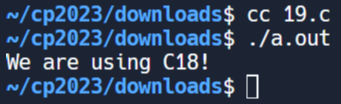
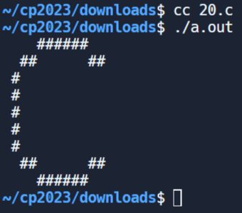

練習1 <<
Previous Next >> 期末總結
EX1
(11)速度單位換算
#include <stdio.h>
float kmph; /* kilometers per hour */
float miph; /* miles per hour (to be computed) */
char line_text[50]; /* a line from the keyboard */
int main() {
printf("Input kilometers per hour: "); // Prompt the user to input kilometers per hour.
// Check the return value of fgets for errors
if (fgets(line_text, sizeof(line_text), stdin) == NULL) {
perror("Error reading input");
return 1; // Return non-zero to indicate an error.
}
// Check the return value of sscanf for errors
if (sscanf(line_text, "%f", &kmph) != 1) {
printf("Error: Please enter a valid number for kilometers per hour.\n");
return 1; // Return non-zero to indicate an error.
}
miph = kmph * 0.6213712; // Convert kilometers per hour to miles per hour.
printf("%f miles per hour\n", miph); // Print the result in miles per hour.
return 0; // Return 0 to indicate successful execution of the program.
}

(12)用 C 語言編寫一個程序，讀取名字、姓氏和出生年份，並依序顯示姓名和年份。
#include <stdio.h>
int main() {
char firstname[20], lastname[20];
int bir_year;
printf("Input your firstname: ");
// Check the return value of scanf to handle input errors
if (scanf("%19s", firstname) != 1) {
fprintf(stderr, "Error reading firstname.\n");
return 1; // Return non-zero to indicate an error.
}
printf("Input your lastname: ");
if (scanf("%19s", lastname) != 1) {
fprintf(stderr, "Error reading lastname.\n");
return 1; // Return non-zero to indicate an error.
}
printf("Input your year of birth: ");
if (scanf("%d", &bir_year) != 1) {
fprintf(stderr, "Error reading year of birth.\n");
return 1; // Return non-zero to indicate an error.
}
printf("%s %s %d\n", firstname, lastname, bir_year);
return 0;
}

(13)如果給定兩個角，請寫一個 C 程式來求三角形的第三個角。
#include <stdio.h>
int main() {
int ang1, ang2, ang3; // three angles of a triangle
// Read two angles of the triangle from the user separated by a comma
printf("Input two angles of a triangle separated by a comma: ");
// Check the return value of scanf to handle input errors
if (scanf("%d, %d", &ang1, &ang2) != 2) {
fprintf(stderr, "Error reading input. Please provide two integers separated by a comma.\n");
return 1; // Return non-zero to indicate an error.
}
ang3 = 180 - (ang1 + ang2); // Calculate the third angle
printf("Third angle of the triangle: %d\n", ang3);
return 0;
}

(14)寫一個 C 程序，使用矩形的高度和寬度作為輸入來列印矩形的周長。
#include <stdio.h>
int main() {
float rec_width; /* Variable to store the width of the rectangle */
float rec_height; /* Variable to store the height of the rectangle */
float rec_perimeter; /* Variable to store the perimeter (to be computed) */
// Prompt the user to input the height of the rectangle.
printf("Input the height of the Rectangle : ");
// Check the return value of scanf to ensure a valid float is entered.
if (scanf("%f", &rec_height) != 1 || rec_height <= 0) {
fprintf(stderr, "Error: Invalid input for height. Please enter a positive number.\n");
return 1; // Return non-zero to indicate an error.
}
// Prompt the user to input the width of the rectangle.
printf("Input the width of the Rectangle : ");
// Check the return value of scanf to ensure a valid float is entered.
if (scanf("%f", &rec_width) != 1 || rec_width <= 0) {
fprintf(stderr, "Error: Invalid input for width. Please enter a positive number.\n");
return 1; // Return non-zero to indicate an error.
}
// Calculate the perimeter of the rectangle using the formula: perimeter = 2 * ( width + height )
rec_perimeter = 2.0 * (rec_height + rec_width);
// Print the calculated perimeter of the rectangle.
printf("Perimeter of the Rectangle is : %f\n", rec_perimeter);
return 0; // Indicate successful program execution.
}

(15)寫一個將攝氏度轉換為華氏度的程式。
#include <stdio.h>
float temp_f; /* degrees Fahrenheit */
float temp_c; /* degrees Centigrade */
char line_text[50]; /* a line of input */
int main() {
printf("Input a temperature (in Centigrade): "); // Prompt the user to input a temperature in Centigrade.
// Check the return value of fgets to handle errors
if (fgets(line_text, sizeof(line_text), stdin) == NULL) {
fprintf(stderr, "Error reading input.\n");
return 1; // Return non-zero to indicate an error.
}
sscanf(line_text, "%f", &temp_c); // Convert the input from 'line_text' to a float and store it in 'temp_c'.
temp_f = ((9.0 / 5.0) * temp_c) + 32.0; // Convert temperature from Centigrade to Fahrenheit and store it in 'temp_f'.
printf("%f degrees Fahrenheit.\n", temp_f); // Print the temperature in Fahrenheit.
return 0; // Return 0 to indicate successful execution of the program.
}

(16)寫一個 C 程式來檢查給定的數字是偶數還是奇數。
#include <stdio.h>
int main() {
int num1, rem1; // Declare two integer variables 'num1' and 'rem1'.
printf("Input an integer: "); // Prompt the user to input an integer.
// Check the return value of scanf
if (scanf("%d", &num1) != 1) {
fprintf(stderr, "Error reading input. Please enter a valid integer.\n");
return 1; // Return non-zero to indicate an error.
}
rem1 = num1 % 2; // Calculate the remainder of 'num1' when divided by 2.
if (rem1 == 0) // Check if the remainder is equal to 0.
printf("%d is an even integer\n", num1); // Print a message indicating that 'num1' is an even integer.
else
printf("%d is an odd integer\n", num1); // Print a message indicating that 'num1' is an odd integer.
return 0; // Return 0 to indicate successful execution.
}

(17)編寫一個 C 程序，將一個數字作為輸入，併計算輸入數字與 51 之間的絕對差。如果輸入數字大於 51，它將返回絕對差的三倍。
#include <stdio.h> // Include standard input/output library
int test(int n); // Declare the function 'test' with an integer parameter
int main(void)
{
// Call the function 'test' with argument 53 and print the result
printf("%d", test(53));
// Print a newline for formatting
printf("\n");
// Call the function 'test' with argument 30 and print the result
printf("%d", test(30));
// Print a newline for formatting
printf("\n");
// Call the function 'test' with argument 51 and print the result
printf("%d", test(51));
}
// Function definition for 'test'
int test(int n)
{
const int x = 51; // Declare and initialize constant variable 'x'
if (n > x) // Check if 'n' is greater than 'x'
{
return (n - x) * 3; // Return the result of the expression (n - x) multiplied by 3
}
return x - n; // Return the result of the expression x minus n
}

(18)計算平均油耗
#include <stdio.h>
int main() {
int x; // 用於存儲總里程的變數，以公里為單位
float y; // 用於存儲總耗油量的變數，以升為單位
// 提示用戶輸入總里程並存入 'x'
printf("Input total distance in km: ");
// 檢查 scanf 的返回值，確保成功讀取一個整數
if (scanf("%d", &x) != 1) {
fprintf(stderr, "Error: Invalid input for total distance.\n");
return 1;
}
// 提示用戶輸入總耗油量並存入 'y'
printf("Input total fuel spent in liters: ");
// 檢查 scanf 的返回值，確保成功讀取一個浮點數
if (scanf("%f", &y) != 1) {
fprintf(stderr, "Error: Invalid input for total fuel spent.\n");
return 1;
}
// 計算並打印平均油耗
printf("Average consumption (km/lt) %.3f ", x / y);
printf("\n");
return 0;
}

(19)編寫一個C 程式來取得您正在使用的C 版本
#include <stdio.h>
int main(int argc, char** argv) {
// Check for C standard version
#if __STDC_VERSION__ >= 201710L
printf("We are using C18!\n");
#elif __STDC_VERSION__ >= 201112L
printf("We are using C11!\n");
#elif __STDC_VERSION__ >= 199901L
printf("We are using C99!\n");
#else
printf("We are using C89/C90!\n");
#endif
// Indicate successful execution
return 0;
}

(20)寫一個 C 程序，使用哈希 (#) 列印一個區塊 F，其中 F 的高度為 6 個字符，寬度為 5 個和 4 個字符。並且還列印一個非常大的“C”
#include <stdio.h>
int main()
{
// Print top line of pattern
printf(" ######\n");
// Print second line of pattern
printf(" ## ##\n");
// Print lines 3 to 7 of pattern
printf(" #\n");
printf(" #\n");
printf(" #\n");
printf(" #\n");
printf(" #\n");
// Print bottom line of pattern
printf(" ## ##\n");
// Print last line of pattern
printf(" ######\n");
return(0);
}

練習1 <<
Previous Next >> 期末總結